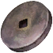
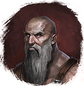

Шлифовальный камень
Предметы / С заданий
Открыть в интерактивной вики →
| Вес | 20 |
|---|
Описание
Камень, нужный  Верштейн из Беирна для работы. Продает
Верштейн из Беирна для работы. Продает
Верштейн из Беирна для работы. Продает 
Воберг во время активной задачи.Рецепт
Торговля: 470k